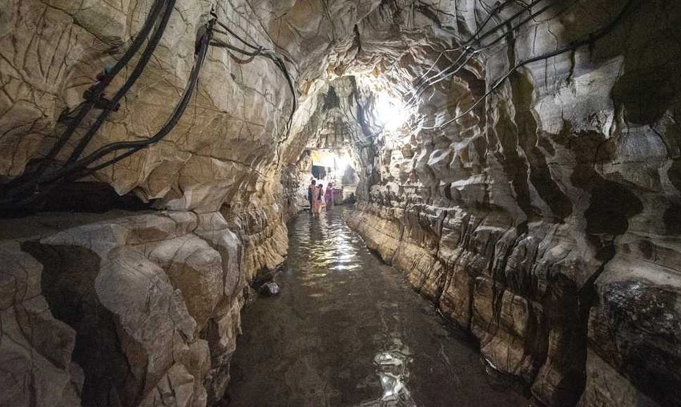
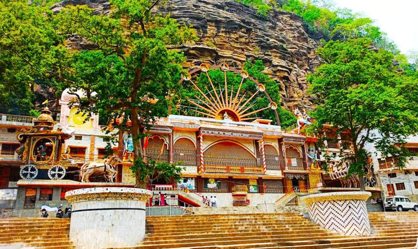

Explore the Sacred Land
Chitrakoot is steeped in mythology and spirituality. As a guest of Tapovan Resort,
you're perfectly positioned to visit all these divine locations.
Our team can assist
with local guides and transportation.

Ramghat
The most revered ghat in Chitrakoot, set on the banks of the Mandakini River. Lord Ram, Sita, and Lakshmana are believed to have spent time at this sacred spot. The evening aarti here is a deeply moving spiritual experience — the entire riverbank glows with diyas and filled with devotional chants.

Kamadgiri
A sacred hill considered to be Lord Ram's abode during his exile. Devotees take a 5 km pradakshina (circumambulation) around the hill as an act of devotion. The base of the hill is lined with temples and ghats, making it a complete spiritual circuit.

Hanuman Dhara
A natural waterfall and temple dedicated to Lord Hanuman, located atop a hill accessible by climbing approximately 360 steps. The cool spring water that constantly falls on the idol is believed to have healing properties. The hilltop offers panoramic views of Chitrakoot's landscape.

Sphatik Shila
A large crystalline rock by the Mandakini River where Lord Ram and Sita are believed to have rested. The footprints of Sita are said to be imprinted on the rock. The serene surroundings by the river make it a beautiful spot for quiet reflection.

Gupt Godavari
A fascinating cave system with a subterranean stream, believed to be the hidden Godavari River. The caves contain rock formations resembling thrones where Lord Ram is said to have held court. One of the most unique and mystical experiences in Chitrakoot.

Sati Anusuya Ashram
A peaceful ashram in the deep forest, dedicated to the revered sage Atri and his wife Anusuya. Lord Ram, Sita, and Lakshmana visited this ashram during their exile. The surrounding forest walks are serene and spiritually uplifting.
Stay at Tapovan Resort
and Explore It All
Our resort is your perfect base for exploring Chitrakoot's divine sites. We can arrange local guides, transport, and day itineraries for you.
Book Now on WhatsApp